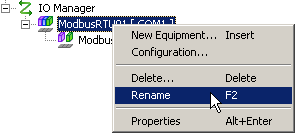
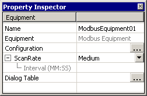

|
|
|
|
|
|
|
|
This section describes how to modify or delete Drivers and Equipment.
Although you can change the configuration of drivers and equipment, you cannot change the driver or equipment once it has been added to the user application. If you want to set up a different driver or equipment, add the new driver or equipment and then delete the previous driver or equipment.
To delete, right-click the Driver or Equipment node, and click Delete.

When you delete a driver or equipment, the scan group defined in the driver will automatically be deleted, resulting in the scan group of the variable where the equipment was set becoming unassigned. See Section 6.3.2, Dividing Variables into Scan Groups.
If the scan group setting is unassigned, do one of the following:
Create a new driver and assign a scan group.
Set the source to Internal.
Delete the variable.
For more information, see Chapter 6, Creating Variables.
For variables that are now unassigned, either set their Source to Internal, or add another driver and assign the variable to the Scan Group.
For information about modifying variables, see Section 6.5, Selecting, Copying, Deleting, and Editing Variables.
Right-click the node you want to rename (Driver or Equipment), and then click Rename.

You can also change the name in the Driver or Equipment properties.
